Несущую способность сваи нельзя увидеть —
мы её измеряем и подтверждаем протоколом
Статические и динамические испытания свай, забивка железобетонных свай — по всему Казахстану. Выезд инженера в течение 2 дней, отчёт — с результатами, которые принимает экспертиза.
Три задачи. Одна цель — доказать, что фундамент выдержит.
Работаем как отдельно, так и полным циклом: забили сваю — тут же подтвердили её несущую способность.
Динамические испытания свай
Испытание свай динамической нагрузкой: определяем несущую способность и контрольный отказ по волновой теории удара. Быстрее и дешевле статики — до 10 пробных свай в день на одном объекте.
- Метод PDA / ELDI (ASTM D4945)
- Забивные и буронабивные сваи
- Отчёт с графиками для экспертизы
Статические испытания свай
Испытание свай статической нагрузкой — «золотой стандарт» геотехники: прикладываем реальную нагрузку к пробной свае и фиксируем осадку. Заодно проверяем несущую способность грунтов основания. Максимальная достоверность для объектов КС-3 и сложных грунтов.
- Программа испытаний под объект
- Инженерно-геологические изыскания
- Испытание грунтов сваями
- Заключение, принимаемое экспертизой
Забивка свай
Погружение железобетонных свай сваебойными установками для устройства свайного фундамента. Собственный парк техники, работаем в любых грунтах, срубка голов свай включена.
- Сваи С50-30 … С100-30
- Выезд техники по всему Казахстану, включая Астану и Алматы
- Контроль отказов в процессе забивки
От заявки до протокола — четыре шага
Сроки одинаковы для Астаны и для выезда в другой регион — техника и инженеры мобильны.
Офис в Астане. Техника — по всей стране.
Головной офис и склад техники находятся в Астане, но объекты — по всему Казахстану: от Атырау до Усть-Каменогорска. Перебазировка сваебойной установки и инженера рассчитывается индивидуально под маршрут.
Проверяем сваи и свайный фундамент, проводим статические и динамические испытания свай, а также забивку свай — в Астане, Алматы, Шымкенте, Караганде, Актобе, Атырау, Павлодаре, Костанае, Усть-Каменогорске, Таразе, Кызылорде и Актау.
Объекты, где мы уже подтвердили несущую способность
Часть реализованных статических испытаний — по городам и нагрузкам. Полные протоколы предоставляем по запросу.
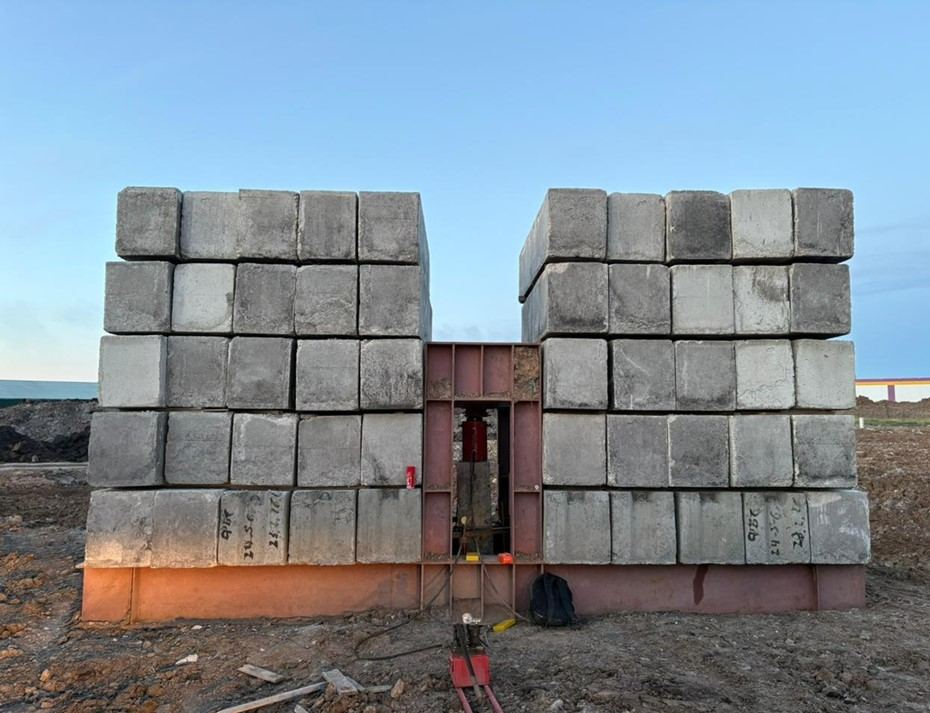
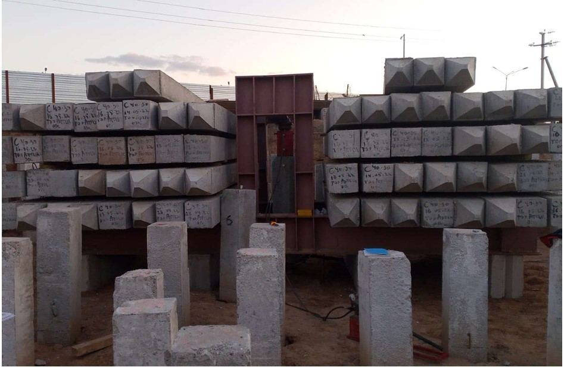
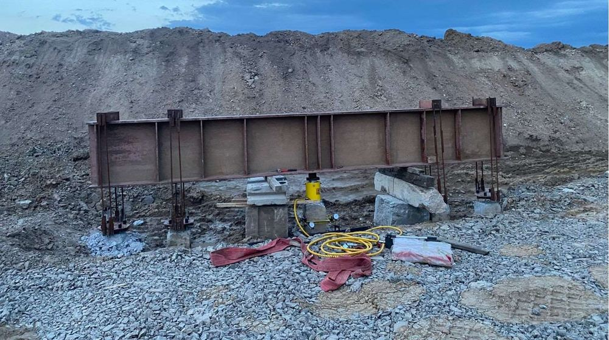
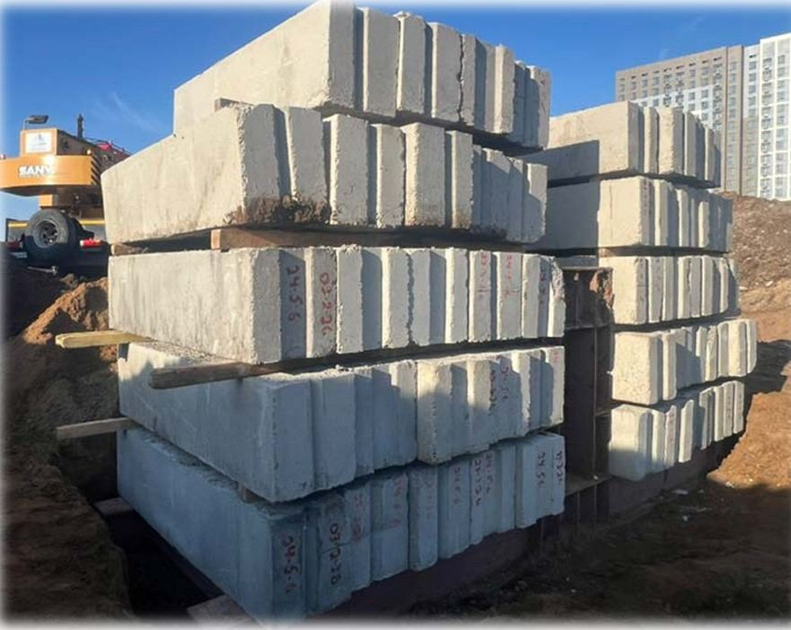
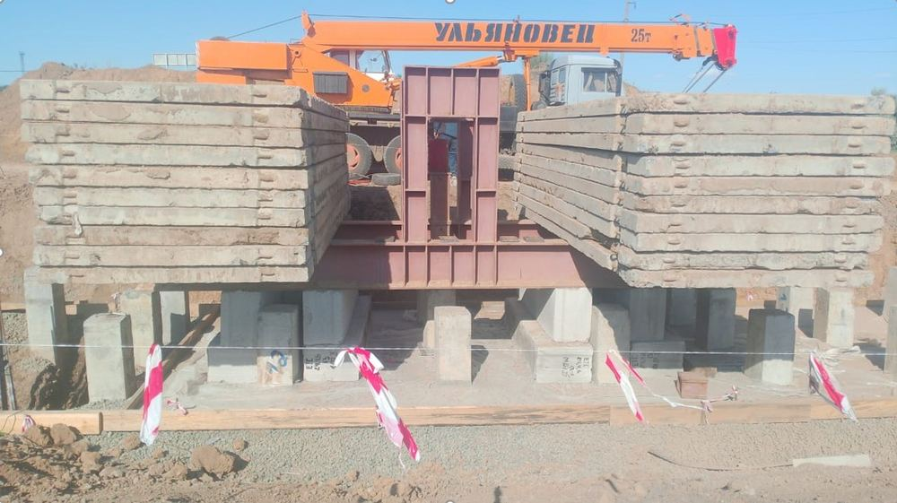
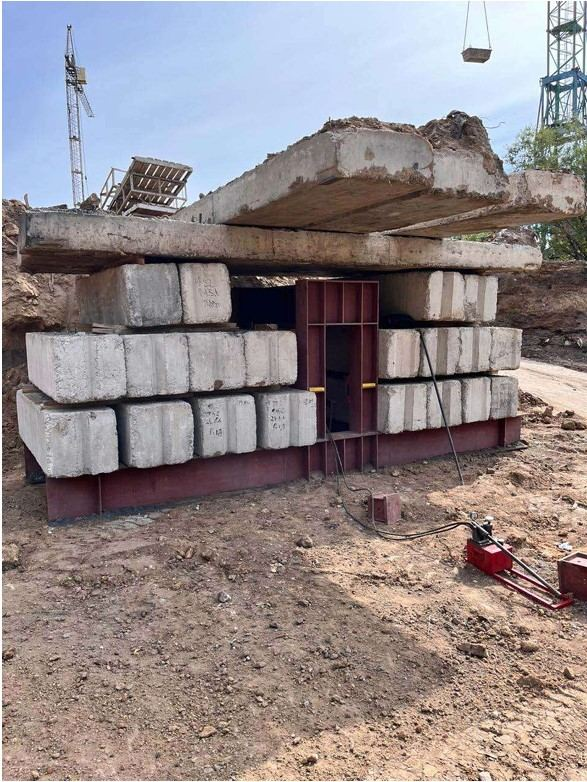
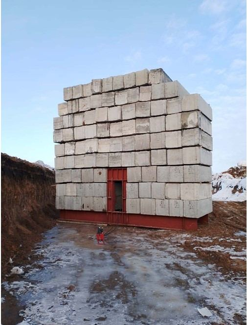
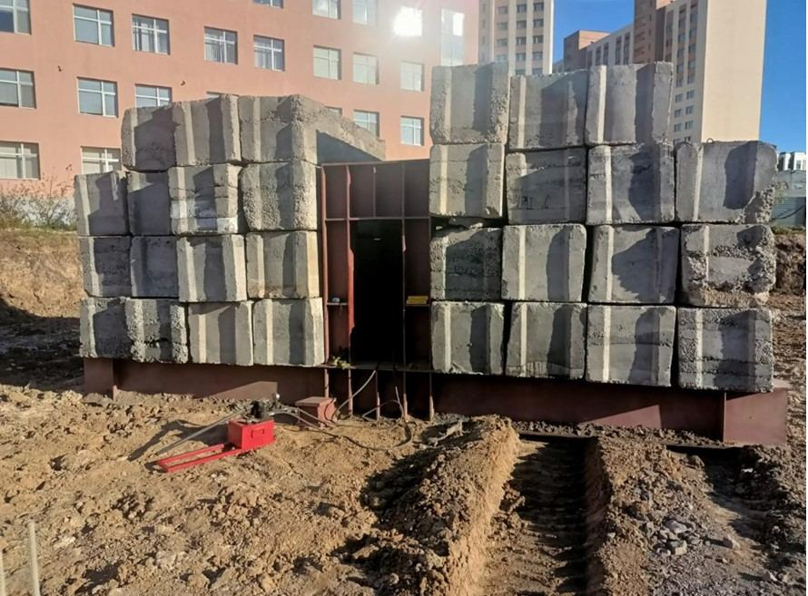
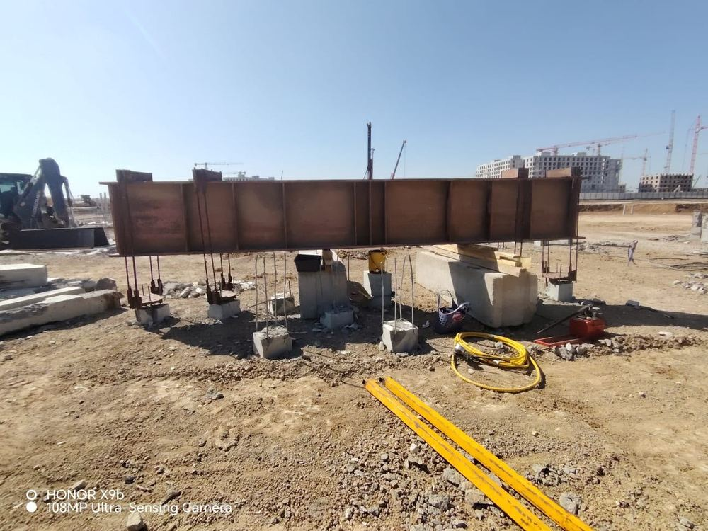
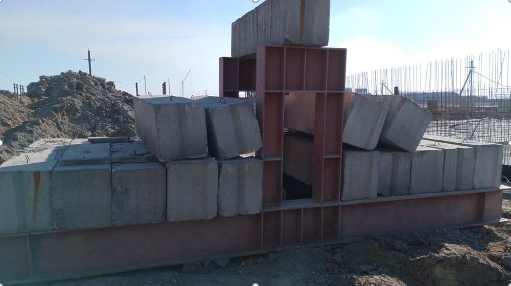
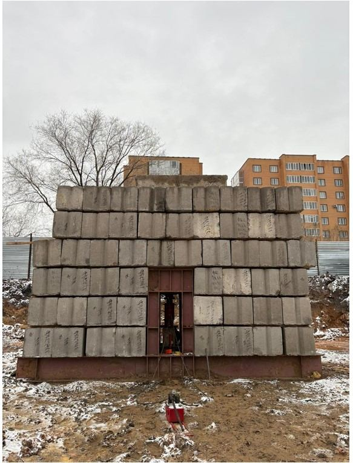
О ценах, сроках и разнице методов
Статические испытания прикладывают к свае реальную эталонную нагрузку и напрямую измеряют осадку — это самый точный метод, но дороже и дольше. Динамические испытания (метод PDA/ELDI) оценивают несущую способность по волновой теории удара — быстрее, дешевле и подходят для проверки большого числа свай на объекте.
Стоимость зависит от метода испытания, типа и длины сваи, грунтовых условий и удалённости объекта от Астаны. Присылайте параметры объекта в WhatsApp — рассчитаем стоимость в течение дня.
Нет, головной офис находится в Астане, но мы регулярно выезжаем по всему Казахстану — от Атырау и Актау до Усть-Каменогорска. Стоимость перебазировки техники и инженера рассчитывается под конкретный маршрут.
Протокол испытаний с графиками нагрузки и осадки, а также заключение о несущей способности сваи — документы оформляются в соответствии с ГОСТ 5686-2020 и принимаются экспертизой.
Как правило, инженер выезжает на объект в течение 2 дней после согласования программы испытаний. Точные сроки зависят от загрузки техники и удалённости объекта.
Стоимость забивки зависит от типа и длины сваи, объёма работ, грунтовых условий и удалённости объекта. Присылайте параметры объекта в WhatsApp — рассчитаем стоимость и сроки в течение дня.
Да, испытания должна проводить организация с соответствующей аккредитацией лаборатории — иначе протокол не примет экспертиза. NE-TI проводит испытания в соответствии с ГОСТ 5686-2020, наши протоколы принимаются государственной экспертизой РК.
Пришлите в WhatsApp параметры объекта: тип и длину свай, их количество, грунтовые условия и город. В течение дня оформим смету — с методом испытания, объёмом работ и итоговой стоимостью.
Цель — быстро и без больших затрат определить несущую способность сваи и проконтролировать качество её погружения по отказу. Метод основан на волновой теории удара (PDA/ELDI) и часто применяется для проверки большого числа пробных свай на объекте перед началом основных работ.